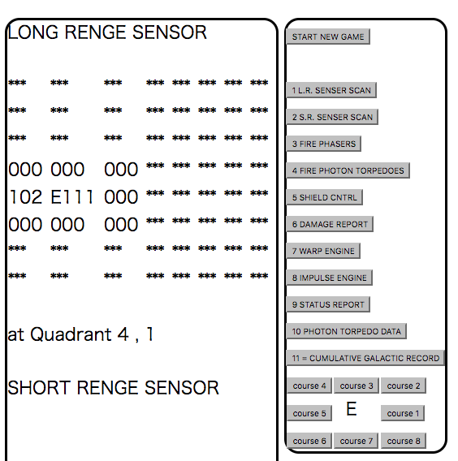
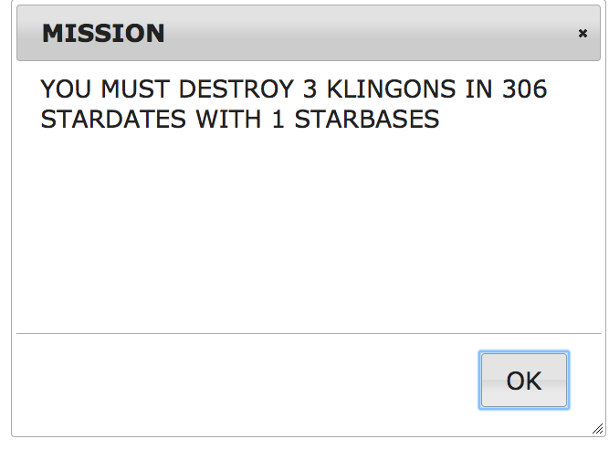

[ HOME ][ About ][ Usage ]
 Usage - Star Trek Text Game
Usage - Star Trek Text Game
How to play
Please read the rules of the game at first.
遊び方
まず最初に ゲームのルール を読んでください。
Main Screen
largely divided into right and left.
on the right side there is a button for the command that the player CAN select.
on the left side, the result of executing the command is displayed.
メイン画面
大きく左右に分かれています。
右側には、プレイヤーが選択するコマンドのボタンがあります。
左側には、コマンドを実行した結果が表示されます。

How to start the game
Please click "START NEW GAME" button at the top right.
Mission is displayed,
when the initialization of the application is completed.
ゲームの開始
右上にある「 START NEW GAME 」ボタンをクリックします。
アプリの初期化が終わると、指令書が表示されます。
